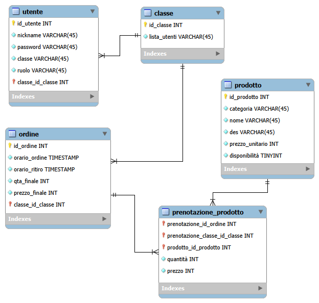

SpeedyBreak è una soluzione digitale avanzata progettata per ottimizzare e velocizzare la gestione degli ordini presso il bar dell'Istituto Aldini Valeriani. Il sistema mira a ridurre drasticamente i tempi di attesa e migliorare l'efficienza operativa sia per il personale che per gli studenti.